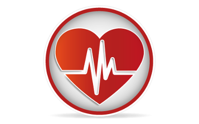

Somos uma clínica de viciados e estamos aqui para ajudar pessoas que sofrem de dependência química ou comportamental. Nosso principal objetivo é ajudar os pacientes a superar seu vício, fornecendo tratamentos e terapias para ajudá-los a controlar os sintomas de abstinência e a mudar seu comportamento para evitar recaídas.
Estamos equipados com uma equipe altamente qualificada de médicos, terapeutas, conselheiros e enfermeiros, que trabalham juntos para ajudar os pacientes a alcançar uma vida mais saudável e equilibrada. Ofereçemos uma variedade de tratamentos personalizados para atender às necessidades individuais de cada paciente, desde terapia cognitivo-comportamental até terapia de grupo e aconselhamento individual.
Sabemos o quanto pode ser difícil admitir que se tem um problema com o vício, mas estamos aqui para ajudar a guiá-lo ao longo do caminho do tratamento. Nossa equipe é dedicada a fornecer um ambiente seguro e acolhedor para todos os pacientes, e estamos comprometidos em ajudá-los a alcançar a recuperação a longo prazo.
Se você ou alguém que você conhece está lutando contra o vício, não hesite em me contatar. Estamos aqui para fornecer o apoio e o tratamento necessários para ajudá-lo a superar o vício e começar a viver uma vida feliz e saudável.